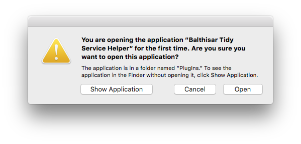

Starting Balthisar Tidy for the First Time
The first time you start Balthisar Tidy for Work, Mac OS X may ask for your permission to run Balthisar Tidy Service Helper as shown in the picture below. If you plan to use Balthisar Tidy for Work’s System Services, then you should allow this action by choosing Open.

Explanation
This permission request is the result of two design decisions to make your life better:
- Balthisar Tidy for Work is sandboxed, meaning that it can only run with privileges you assign and cannot interfere with the rest of your operating system.
- Some of Balthisar Tidy for Work’s System Services are run as background processes so that Balthisar Tidy for Work application doesn’t have to startup and run every time you want to use a Service.
- Balthisar Tidy for Work’s most useful AppleScript properties are delivered by the background process, meaning you don't have to wait for the entire application to load in order to use them.
Note that because Mac OS X is protecting you, if you move Balthisar Tidy for Work or rename it, then Mac OS X will ask for your confirmation again.